代码回溯
第一章 · 回到未来
↓ 向下滑动开始阅读
壹 · 触电重生
【远景 · 2026年 · 神经元科技数据中心】
2026年的夏天，神经元科技刚完成B轮融资，估值3亿美金。我觉得自己站在了世界之巅。
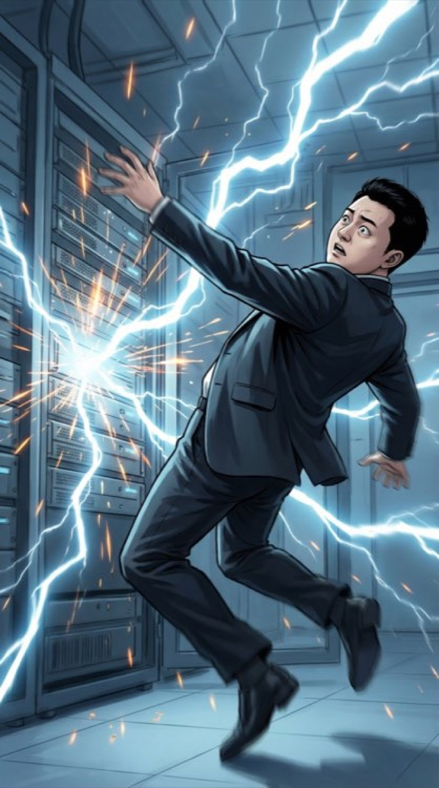
【中景·仰角 · 服务器机房 · 电弧闪烁】
然后，一切在一道白光中结束——不对，是开始。
三亿美金的CEO，死法居然是摸了一下机架的裸露线头。说出去都没人信。
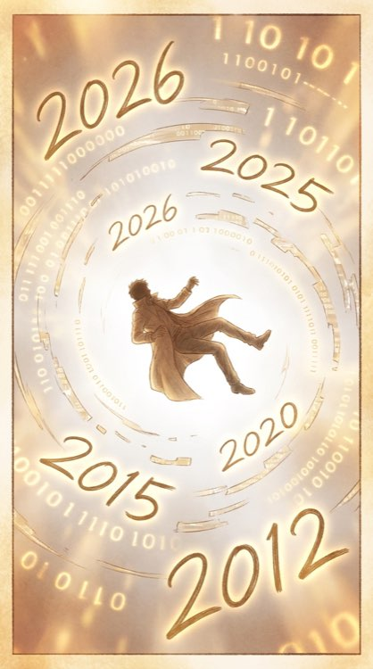
【抽象过渡 · 时间流逝】
意识在黑暗中坠落。无数数字和代码从身边飞过——2026、2025、2020……像快进倒带的人生。
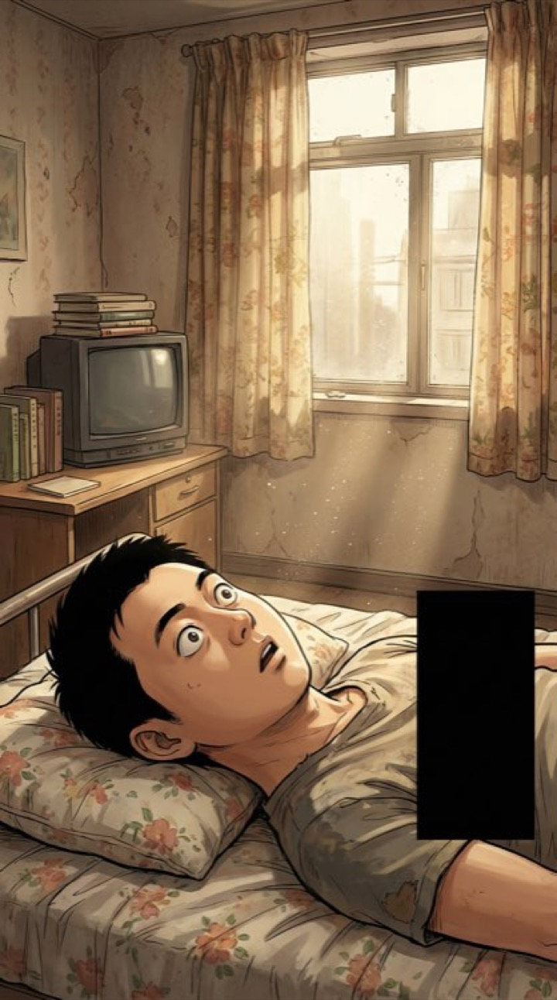
【特写·仰角 · 老旧出租屋 · 清晨阳光】
我猛地睁开眼。
发霉的天花板。碎花床单。一台21寸CRT电视。
这他妈什么情况……我不是在机房吗？
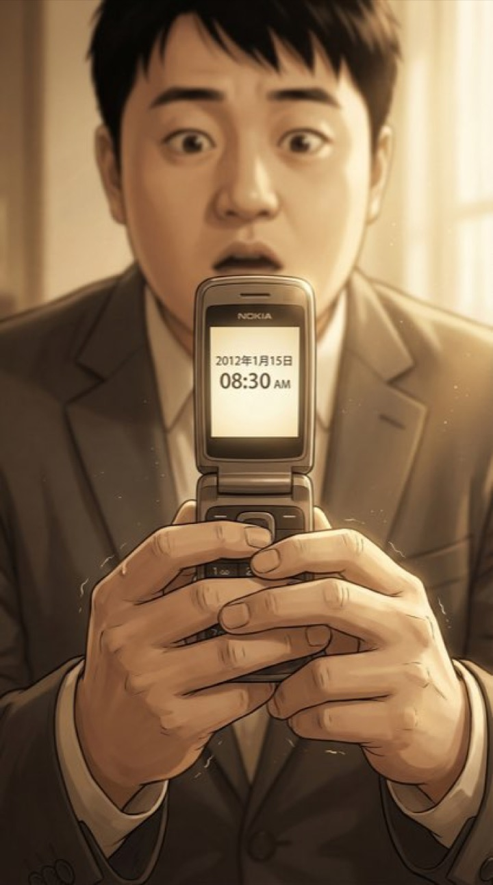
【特写 · 手持翻盖手机 · 屏幕显示日期】
我抓起床头的手机。翻盖的。诺基亚。屏幕上赫然写着——
2012年1月15日。
我的iPhone 15呢？我的Apple Watch呢？这破诺基亚……等等。2012年？？？
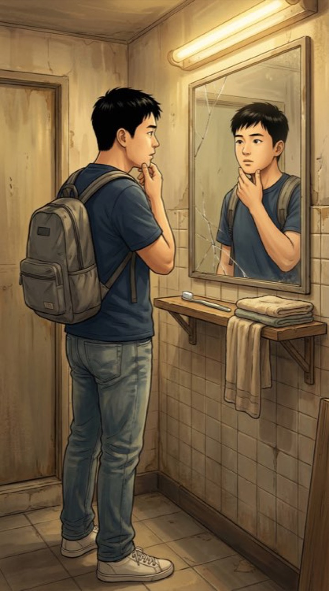
【中景 · 狭小卫生间 · 破镜子】
冲进卫生间，镜子里是一张年轻了14岁的脸。没有皱纹，没有黑眼圈，下巴光溜溜的。
我的络腮胡呢？哦对……那是35岁以后才蓄的。这张嫩脸……29岁的我。
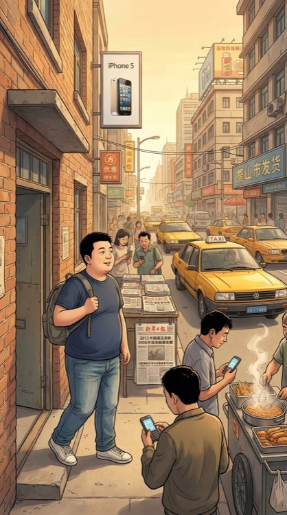
【全景 · 2012年城市街头 · 早晨】
走出公寓的那一刻，2012年的空气扑面而来。路边的桑塔纳出租车，举着翻盖手机自拍的路人，报刊亭上写着"iPhone 4S震撼上市"。
这个世界还不知道移动互联网将会改变一切。而我，全都知道。
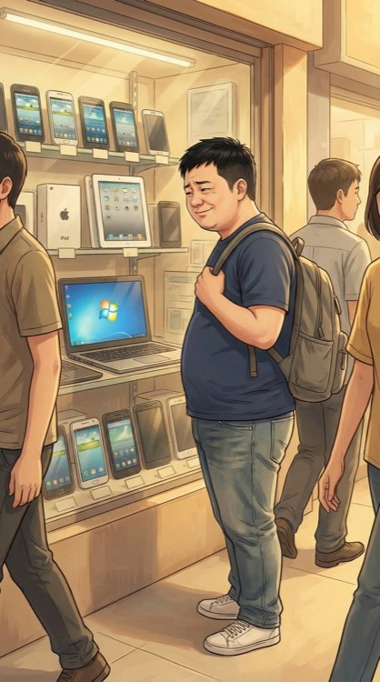
【中景 · 街边电子商城 · 橱窗展示】
路过一家电子城，橱窗里摆着iPad 2和运行Windows 7的笔记本。
这些东西……在2026年全是电子垃圾。但在2012年，每一台都是宝贝。这感觉就像……穿越到了远古时代看石器。
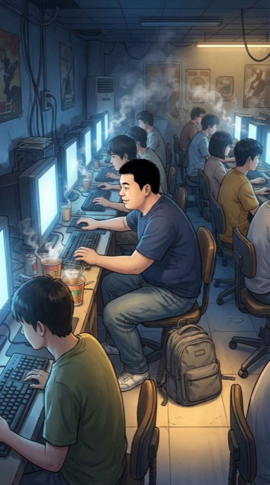
【全景 · 2012年网吧 · 蓝色灯光 · 烟雾缭绕】
我走进一家网吧。3块钱一小时。键盘油腻得发光，空气里混着泡面和烟味。
这是我的主场。2012年的互联网——在我眼里，就像是一张完全透明的地图。每条路通向哪里，我都记得。
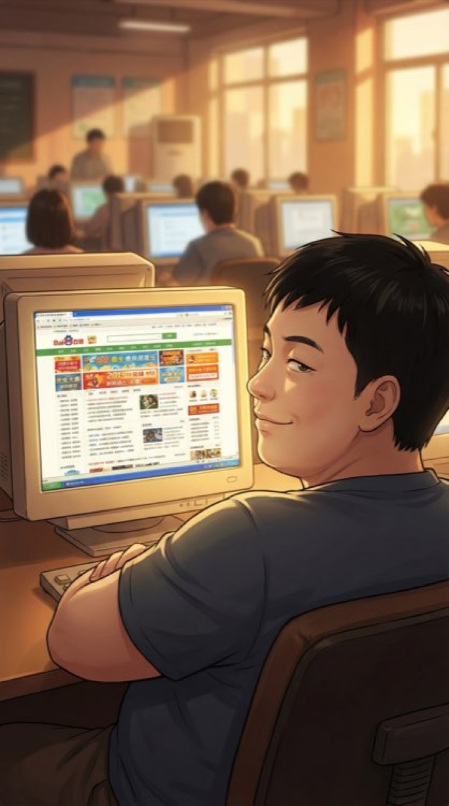
【过肩镜头 · 电脑屏幕 · 网页界面】
打开2012年的淘宝首页。满屏山寨货和辣眼睛的排版。
黄金时代啊。现在的问题是——我该怎么用这14年的信息差？
贰 · 兄弟，干不干？
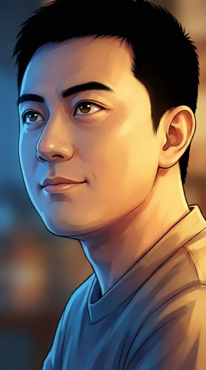
【特写·3/4侧面 · 分裂光影】
脑子里两个声音在打架。
一边说：去买比特币！2012年才5美金一个，2021年涨到69000！现在买一万块能换200个……
另一边说：比特币又不会跑，但如果我不去找陈磊，那个胖子可能一辈子窝在外企写CRUD。
⚡ 决策点 1：重生后的第一步
→ 我选B。比特币又不会跑，兄弟可能会。
团队永远比钱重要。这是上辈子交了三亿美金学费才悟出来的道理。
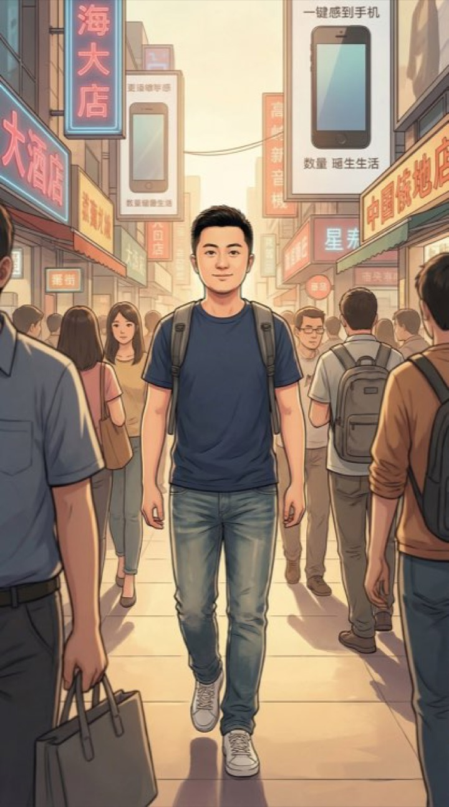
【中远景·略低角度 · 商业街 · 人流穿梭】
我穿过半个城市去找陈磊。脚步快得像赶投资人会议——虽然现在的我连个投资人的微信都没有。
等等，2012年还没微信。或者说有了？……好像刚出几个月。算了，这不重要。
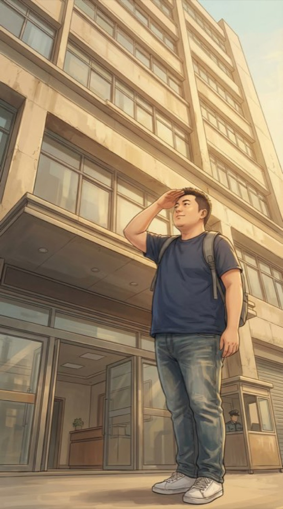
【仰角全景 · 外企写字楼 · 中午】
陈磊当时在一家外企当码农。这栋楼我来过一百次——上辈子也是从这里把他拐走创业的。
只不过上辈子花了三个月才说动他。这次……我没那个耐心了。
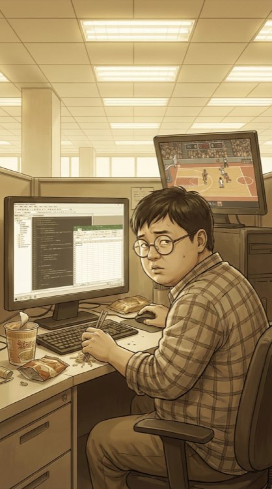
【俯角中景 · 办公隔间 · 日光灯】
果然。陈磊的工位上，一个屏幕写代码，另一个屏幕偷偷放NBA直播。手里还端着一碗泡面。
十四年了，这胖子一点没变。连偷看球赛的姿势都一模一样。
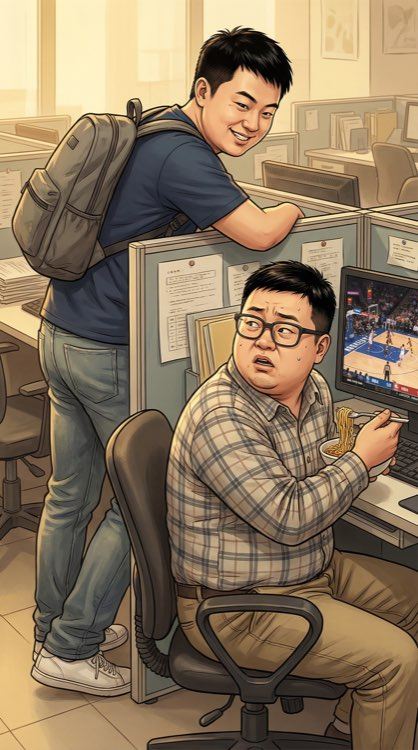
【中景双人 · 隔间 · 喜剧时刻】
我：热火赢了，勒布朗三双。别看了。
陈磊吓得泡面差点扣自己脸上，猛地转过头。
陈磊：卧槽朱江？！你怎么……等等，比赛还没打完你怎么知道结果的？
我：呃……我猜的。走，请你吃饭。
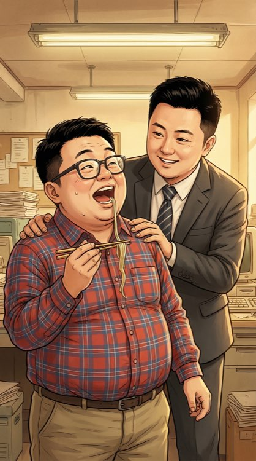
【近景双人 · 情感特写】
陈磊的脸。胖嘟嘟的，架着那副永远往下滑的黑框眼镜，嘴角挂着泡面。
上辈子，这个胖子陪我从0做到3亿估值，从来没说过一句放弃。后来公司爆发式增长，他却因为过劳住了院……这辈子，我不会再让这种事发生。
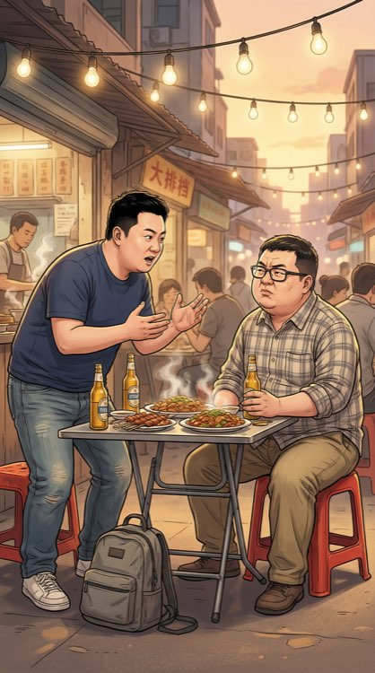
【全景 · 大排档 · 黄昏暖光 · 啤酒烧烤】
我：磊子，移动互联网马上要爆发了。我有一个想法，三年内能做到上亿用户。
陈磊：……你从哪来的自信？上次你说要做的那个社交app，最后连logo都没设计出来。
我：这次不一样。
陈磊：你每次都说不一样。
他说得对。但这次是真的不一样——因为我是从未来回来的。当然这话不能说。
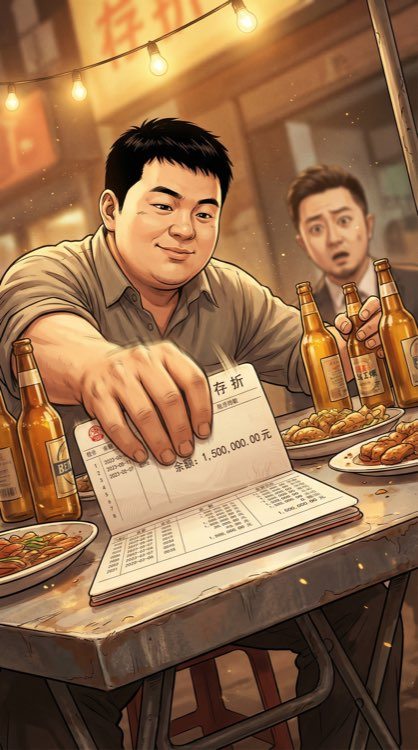
【低角度特写 · 手拍桌面 · 存折 · 啤酒瓶晃动】
我把存折"啪"地拍在桌上。12万。我全部身家。
我：十二万。全在这。你信不信无所谓，干不干？
⚡ 决策点 2：如何说服陈磊
→ 我选C。想这么多干嘛，先干了再说。
能用钱和行动解决的事，就别浪费时间在嘴上。这是我的风格。
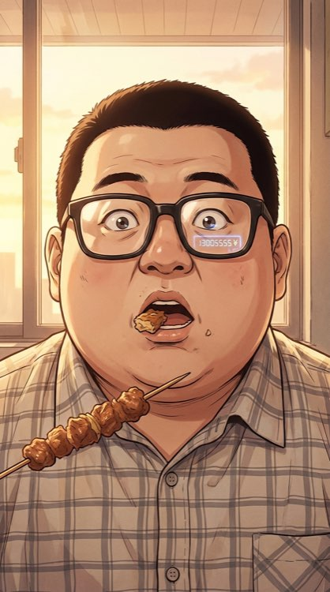
【特写 · 陈磊面部反应】
陈磊手里的羊肉串定在半空。嘴巴张着，一口啤酒忘了咽。
陈磊：……你疯了吧？你就这么点钱。
我：所以你到底干不干？
他看了我三秒。然后把啤酒一口干了。
陈磊：你这人从来不干没把握的事。行，我干。
兄弟就是兄弟。上辈子如此，这辈子也如此。
叁 · 降维打击
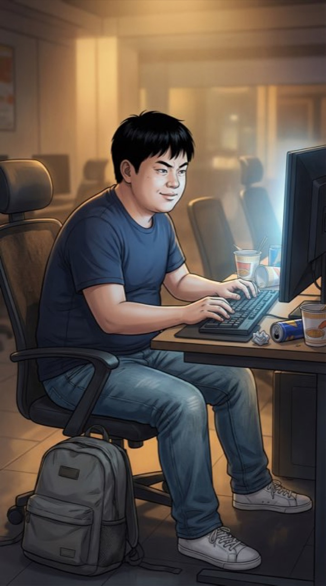
【中景 · 深夜网吧 · 只剩我一人】
凌晨两点。网吧里只剩我和一个趴在键盘上睡着的大学生。
我打开了那家公司的官网。2013年才被公开的那个安全漏洞——此刻就安静地躺在他们的系统里，像一扇没上锁的保险柜。
2026年的安全攻防知识 vs 2012年的系统防护……这不叫黑客。这叫欺负小朋友。
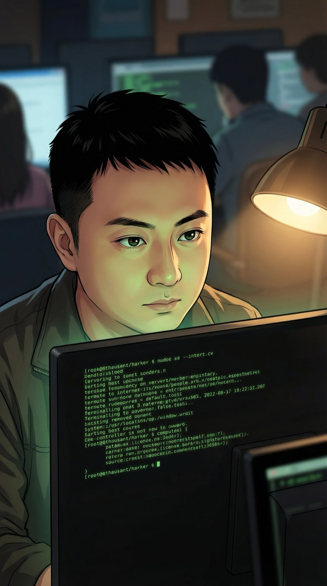
【过肩特写 · 屏幕代码 · 终端窗口】
十五分钟。只用了十五分钟就找到了入口。在2026年，这种级别的漏洞连实习生都不会犯。但在2012年，这是价值千万的信息。
问题来了——我怎么处理这个漏洞？
【3/4侧面 · 屏幕光照亮半边脸 · 沉思】
屏幕的光映在我脸上。三个选择在脑子里转。
黑帽能赚快钱。但上辈子做了十四年白帽，不是为了重来一次就堕落的。
⚡ 决策点 3：发现安全漏洞后
→ 我选A。正大光明地走白帽路线。
有些底线，不管穿越几次都不能丢。何况——白帽路线才是真正的长期主义。
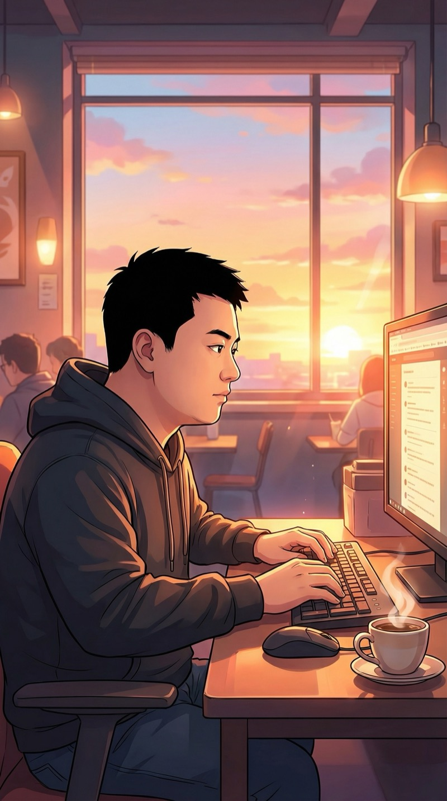
【侧面中景 · 网吧 · 天际微明】
我花了四个小时写了一份极其详细的漏洞报告。不只是告诉他们哪里有洞，还写了完整的修复方案和架构建议。
这份报告放在2026年值一篇顶会论文。放在2012年？足够让一家公司的CTO欠我一个人情。
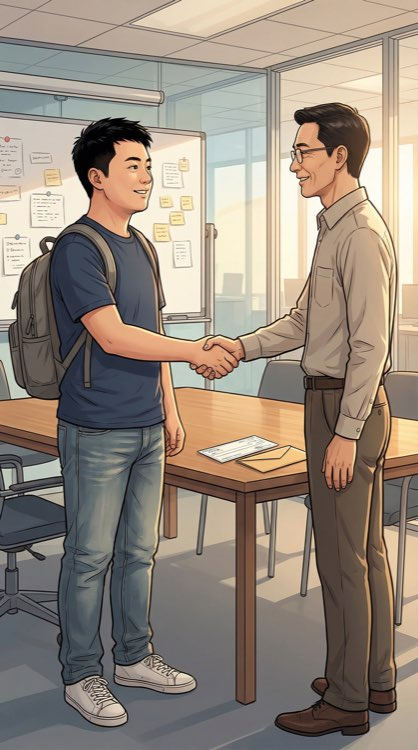
【中景双人 · 公司会议室 · 握手】
三天后，那家公司的CTO亲自约我见面。五万酬谢金，加一张他的名片。
CTO：小兄弟，你这水平不应该在网吧里混。随时来找我。
不急。这张名片比五万块值钱十倍。人脉这个东西，2012年和2026年都一样——关键时刻能救命。
肆 · 暗流
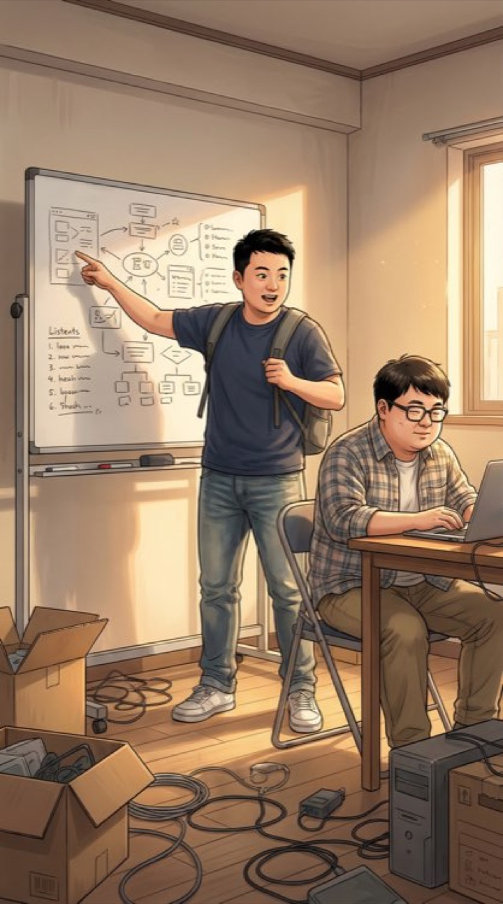
【全景 · 出租屋改造的"办公室" · 白板+折叠椅】
我们的"公司"——一间月租800块的出租屋。白板是从废品站淘的，桌子是门板加砖头。
我：磊子，计划是这样的。我做产品，你同时接几单安全咨询——先把现金流撑起来。
⚡ 决策点 4：拿到第一桶金后的策略
→ 两条腿走路：我全力做产品，陈磊同步接安全咨询养活我们俩。
创业最怕的不是失败，是还没开始就断粮。MVP思维：最小资源，最快验证。
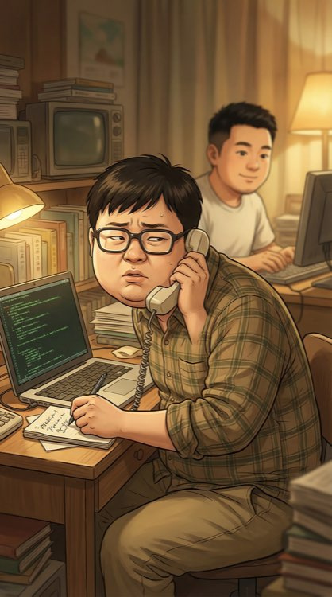
【中景 · 出租屋 · 陈磊电话咨询】
陈磊：您好，这里是……呃……极光安全工作室。对，就我们两个人。但是水平您放心……
我在另一边忍着笑。这胖子接商务电话紧张得声音都在抖。
上辈子他也是这么过来的。但后来他成了全公司最能扛的技术VP。每个大佬都有菜鸟的时候。
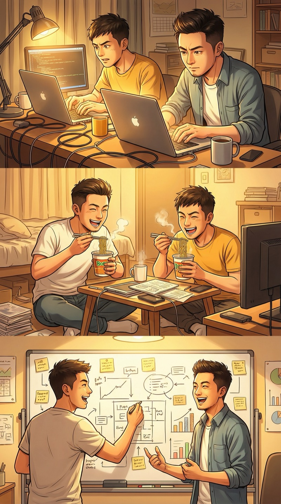
【蒙太奇 · 时间流逝 · 暖色调】
接下来的日子像快进键。白天写代码，晚上讨论方案。吃了一个月的泡面和路边炒饭。陈磊接了三单安全咨询，进账八万——够我们活半年。而我的产品原型，终于有了雏形。
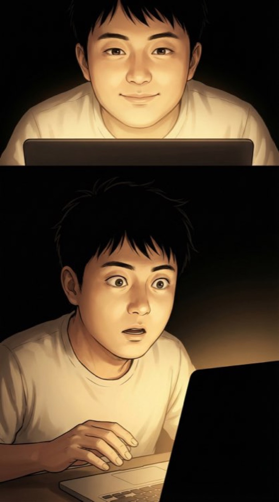
【低角度特写 · 深夜 · 笔记本屏幕光 · 震惊表情】
一切都在按计划进行。直到那个深夜。
我习惯性地刷技术论坛，突然看到一个匿名帖子——
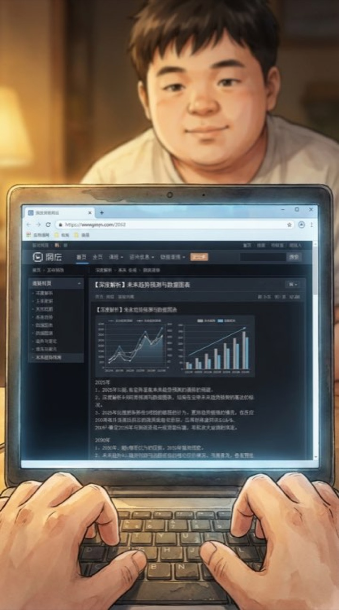
【极端特写 · 屏幕内容 · 诡异蓝光】
那个帖子分析了一家公司未来三年的发展路径。每一个拐点、每一次融资、每一个关键决策——
全部准确。
不是"分析得有道理"的那种准确。是"只有从未来回来的人才知道"的那种准确。
不可能。绝对不可能。除非……
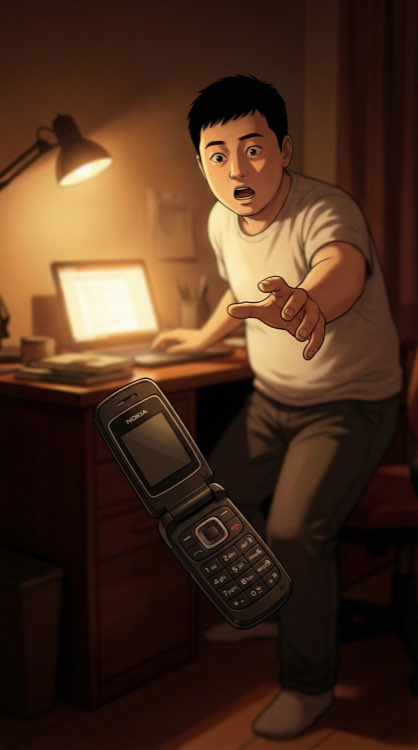
【慢动作 · 诺基亚掉落 · 人物虚化站起】
翻盖手机从手中滑落。在空中翻转了两圈，"啪"地摔在地上。
我盯着屏幕。手指冰凉。
我不是唯一一个重生的人。
在这个已经被改变的2012年——
还有谁，也来自未来？
未完待续